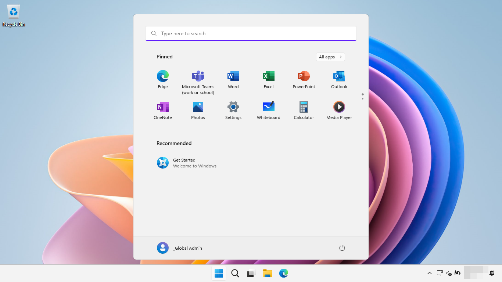
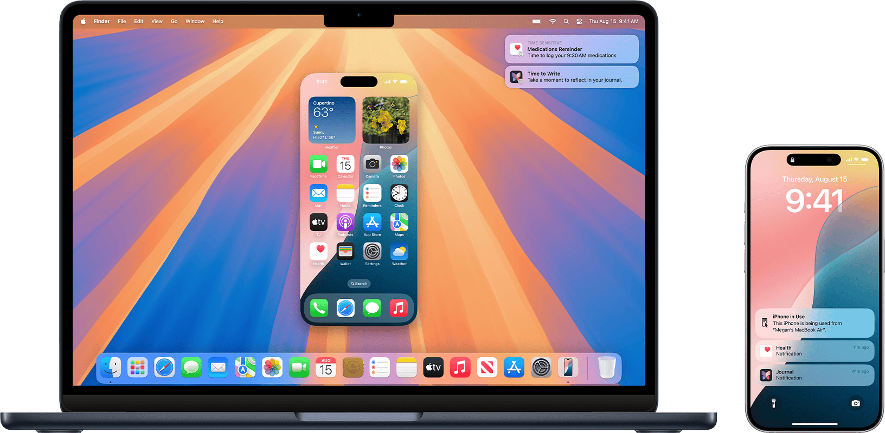

第一章 计算机常用知识
第一章 计算机常用知识
1.1 操作系统
操作系统（Operating System, OS）就是一台电脑或手机的大管家 + 指挥中心。它不创造内容，但它安排一切、管理一切、协调一切。没有它，电脑和手机就是一堆金属和电路板，啥也干不了。
1.1.1 操作系统的 4 个核心作用（类比说明）
| 功能 | 类比 | 简单解释 |
|---|---|---|
| 1️⃣ 管理硬件 | 操场管理者 | 负责谁什么时候使用 CPU（大脑）、内存（白板）、硬盘（资料室） |
| 2️⃣ 运行程序 | 课堂安排表 | 安排你打开的各种程序（微信、Word、浏览器），让它们互不打架 |
| 3️⃣ 文件系统 | 图书管理员 | 把杂乱的硬盘数据整理成文件夹、文件，便于保存和查找 |
| 4️⃣ 用户交互 | 服务员 | 你点鼠标、敲键盘、触屏，操作系统把这些变成电脑能理解的动作 |
1.1.2 32位系统与64位系统
32位系统与64位系统的主要区别体现在处理器的架构能力、内存寻址范围、以及软件支持等方面。首先我们要知道32位和64位指的是什么。其实这是根据CPU内的寄存器字长来确定的，计算机内部数据都是二进制来呈现的，32位的计算机CPU一次最多能处理32位的二进制数据，而64位的计算机CPU一次最多能处理64位的二进制数据，就像一扇大门有32个人并排站的宽度，所以它一次性最多允许32个人并排通过。有时也会用x86和x64来区分，其实x86就是32位的，其处理器内核就是x86。目前我们使用的系统和应用软件大部分默认都是64位的操作系统，有的时候会显示x64或者amd64。
- 区别一：支持的内存大小不同
32位的系统最多支持4G的内存，而64位理论上可以支持18EB（$2^{64}$），常用范围为几十GB~TB的内存。所以能安装64位的系统尽量安装64位； - 区别二：数据处理能力不同
32位的计算机CPU一次能处理最多32位的二进制数据，而64位的计算机CPU一次能处理最多64位的二进制数据； - 区别三：对配置要求不同
64位的系统只能安装在64位电脑上（CPU必须是64位的），同时需要安装64位常用软件以发挥最佳性能。32位的系统则可以安装在32位（32位CPU）或64位（64位CPU）的电脑上； - 区别四：架构不同
在32位到64位的发展中，架构的改变是一个根本的改变，因此大多数操作系统必须进行全面性修改，以取得新架构的优点；
1 | # Windows下查看系统的架构 |
1.2 常见操作系统
1.2.1 Windows 操作系统
Microsoft Windows 是由微软公司开发的一款基于图形用户界面的操作系统，主要运用于计算机、智能手机等设备。共有普通版本、服务器版本（Windows Server）、手机版本（Windows Phone等）、嵌入式版本（Windows CE等）等子系列，是全球应用最广泛的操作系统之一。
Windows的研发始于1983年，最初目标是在MS-DOS的基础上提供一个多任务的图形用户界面。随着版本的不断更新，Windows逐渐发展为专为个人电脑和服务器用户设计的成熟操作系统，并最终在全球个人电脑操作系统市场占据主导地位。Windows 1.0 于1985年11月20日推出，Windows 3.0发布后开始取得商业地位，1993年8月推出 Windows NT 系列，1996年推出Windows Server系列，2000年推出 Windows Mobile 系列（后被 Windows Phone 取代）。Microsoft Windows 早期为MS-DOS虚拟环境，后采用图形用户界面（GUI），其操作界面先后在1995年（Windows95）、2001年（Windows XP）、2006年(Windows Vista)、2012年（Windows8）进行大幅整改。截至2025年，Windows已发布三十余个版本，普通版本已更新至Windows 11；服务器版本已更新至Windows Server 2025；手机版本已终止研发，最后版本为Windows 10 Mobile ；嵌入式版本为Windows CE（后被Windows for IoT取代）。

1.2.2 MacOS 操作系统
macOS（2011年及之前称 Mac OS X，2012年至2015年称 OS X）是苹果公司推出的基于图形用户界面操作系统，为麦金塔（Macintosh，简称 Mac）系列电脑的主操作系统。macOS 是 1999 年发行的 Classic Mac OS 最终版本 Mac OS 9 的后继者。1999 年发布 macOS Server 的首个版本 Mac OS X Server 1.0，桌面版 Mac OS X 10.0“Cheetah”于 2001 年 3 月 24 日发布。2012 年苹果将 Mac OS X 更名为 OS X，第一个使用此命名的系统为“OS X Mountain Lion”。以前版本的 macOS 以大型猫科动物命名，例如 Mac OS X v10.8 被称为“Mountain Lion”，但随着 2013 年 6 月 OS X Mavericks 的公布，命名开始采用加州地标。2016 年 6 月，苹果公司宣布 OS X 更名为macOS，以便与苹果其他操作系统 iOS, watchOS 和 tvOS 保持统一的命名风格。 在 Apple 宣布启动 Mac 从 Intel 迁移至AppleSilicon 后，首个支持 Apple Silicon 的 macOS Big Sur 于2020 年 6 月 23 日发布，目前最新的版本为 macOS Sequoia，于2024年6月10日在 WWDC 2024 上公布。
由于 Apple 的产品线包括电脑、手机、平板、手表、眼镜、Apple TV 等多种硬件产品，这些硬件的操作系统都建立在一个名为 Darwin 的共同的开源 Unix-like 内核和核心组件之上。在这个共同核心之上，Apple 构建了不同的上层系统库、框架和用户界面，以适应各自设备的硬件特性和使用场景。MacOS 操作系统最大的特点是跨设备尽可能的共享资源，特别是网络服务资源。比如 Apple 的手机、电脑和平板实现了文件共享，Apple 的电脑现在甚至可以实现在电脑上操作手机的功能。

1.3 文件系统概述
文件系统是操作系统中管理和组织数据存储的一套机制，负责：
Windows 文件系统
Windows 文件系统的组织方式是基于层级式树状结构（hierarchical tree structure），以 驱动器（如 C:\）为根，逐级展开目录与文件，类似一棵倒挂的树。它遵循 [卷（volume）] → [目录（folder）] → [子目录 / 文件] 的组织原则。